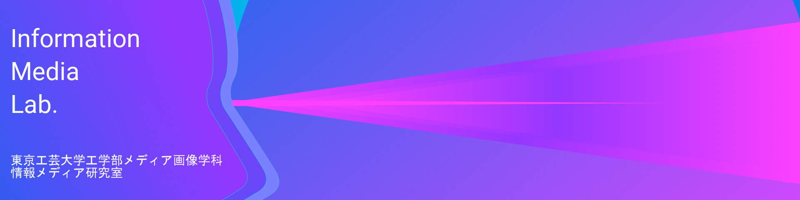

12月26日NEW!

年内最後のゼミを終えて、少しリラックス。

情報メディア研究室の出来事を中心に、大学やメディア画像学科のイベントなど最新のサイト更新情報です。写真をクリックしてください。
めざせメディアイノベーション！
情報メディア研究室では情報メディア技術を積極的に利用して「人にとって使いやすく、楽しく、安全なメディア環境をデザイン（設計）します」。ＣＧ、画像、映像技術やWEB技術などを使ったアプリケーションの研究、人と人、人とコンピュータのコミュニケーションを円滑にするためのユーザインタフェースの研究やシステム作りに取り組んでいます。これらの活動をとおして、「メディアイノベーション」を目指します。
画像認識、CG、映像処理、拡張現実やWEB技術などの情報メディア処理を用いて、新しいアプリケーションやそのもととなる基本アルゴリズムや方法について研究しています。
少し前の研究